Como a clínica funciona no front-end novo: os quatro perfis, o caminho de uma consulta do pedido ao caixa, e o que falta para ligar na API.
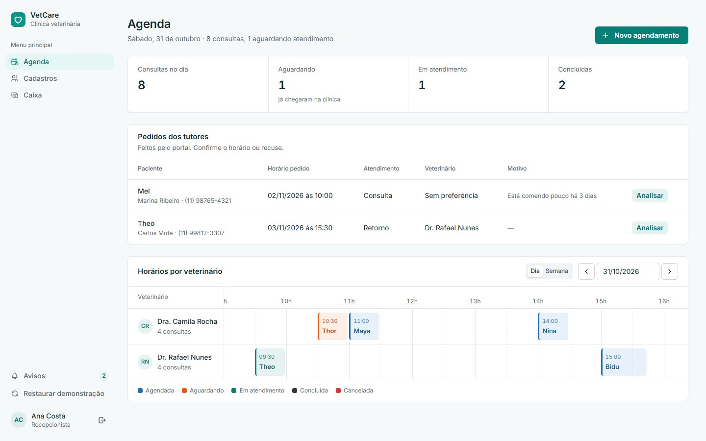
Os repositórios abaixo foram só lidos. Nenhum repositório que já existia foi alterado: o front novo e este documento ficam num repositório próprio.
| Repositório | O que tem | Situação |
|---|---|---|
| lucasj-cet/vetcare-front | Front-end novo (React + Vite + Mantine): 15 telas, 4 perfis, camada de API pronta para trocar os dados de demonstração pela API real. | Novo · entregue |
| gabriela-data/ufba-vetcare | Documentação de arquitetura (UFBA): prioridades Segurança, Disponibilidade, Desempenho e Manutenibilidade; camadas por domínio; 7 ADRs. | Referência · só leitura |
| gabriela-data/reactjs | Esqueleto React com login, contexto de autenticação, rotas e um services/api.js. Não traz as telas do fluxo. | Não é o front do Figma |
| AlexandrePMiranda/VetCare-api | API do sistema. Não está acessível publicamente (privada ou ainda não publicada). | Sem acesso |
| Demais repositórios públicos | Projetos de outras matérias e estudos, sem relação com o VetCare. | Fora do escopo |
| ADR | Reflexo no front |
|---|---|
| 003 · Autorização por perfil | Cada perfil vê só o seu menu e as suas rotas; o login devolve o perfil e o token. |
| 004 · Hash de senhas | O front nunca guarda senha; só o token de sessão. |
| 005 · Auditoria de ações | Toda ação passa por uma função de src/api, um ponto único para a API registrar quem fez o quê. |
| 007 · Filas de tarefas | Relatórios e avisos já são tratados como "pedido → pronto", sem travar a tela. |
src/api/index.js já tem a rota sugerida (página 8).O mesmo login leva cada pessoa direto para a tela de que ela precisa. Os menus mostram só o que aquele perfil pode fazer.
Os perfis conversam entre si. Cada passo abaixo dispara o próximo sozinho, sem ninguém precisar redigitar nada.
A cor de cada estado é a mesma em todas as telas: agenda, fila do veterinário e portal do tutor.
Saídas possíveis: Cancelada pela recepção ou pelo tutor. Pedidos do portal recusados pela recepção também saem como Cancelada; o motivo, se informado, vai junto do aviso ao tutor.
| Horários | Funcionamento das 8h às 18h. Só aparecem horários livres e futuros para o veterinário escolhido, já descontando a duração de cada tipo de atendimento. |
| Exclusão de tutor ou pet | Exclusão lógica (o histórico continua). Bloqueada quando há consulta marcada. |
| Alergias e condições | Destacadas na ficha de atendimento e no prontuário (ex.: alergia a dipirona). |
| Pagamento | Dinheiro calcula troco; cartão de crédito permite parcelar; o caixa fecha o total do dia por forma de pagamento. |
| Usuários | Convite por e-mail com reenvio; usuário desativado não entra. |
| Avisos | Cada perfil recebe os avisos que lhe dizem respeito (chegada para o vet, confirmação para o tutor, cobrança para a recepção). |
| Formulário | Onde abre | O que faz |
|---|---|---|
| Agendamento | Agenda · Portal | Tutor, pet, tipo, veterinário, dia e horário livre. |
| Cadastro tutor + pet | Cadastros | Dados do tutor e do primeiro pet num só passo. |
| Pagamento | Caixa | Forma, troco, parcelas; também lançamento avulso. |
| Aplicação de vacina | Vacinas · Ficha | Vacina, lote, data e próxima dose. |
| Prescrição | Ficha · Prescrições | Medicamentos, dose, frequência; rascunho ou emissão. |
| Movimentação | Financeiro | Receita ou despesa com categoria, valor e data. |
Mesma identidade do protótipo do Figma, revisada para ser mais funcional: números calculados, contraste legível e uso no celular.
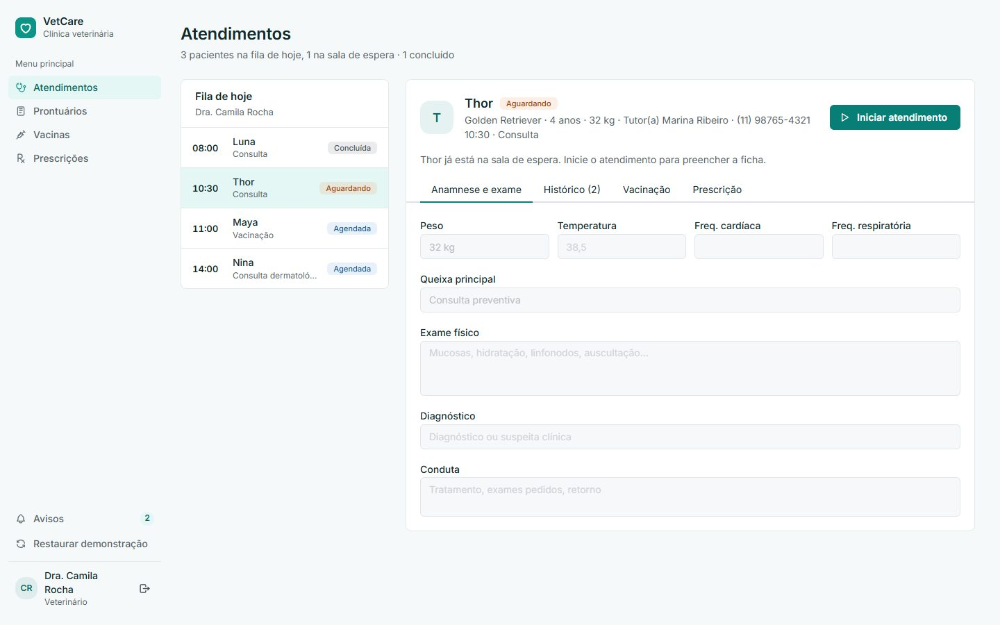
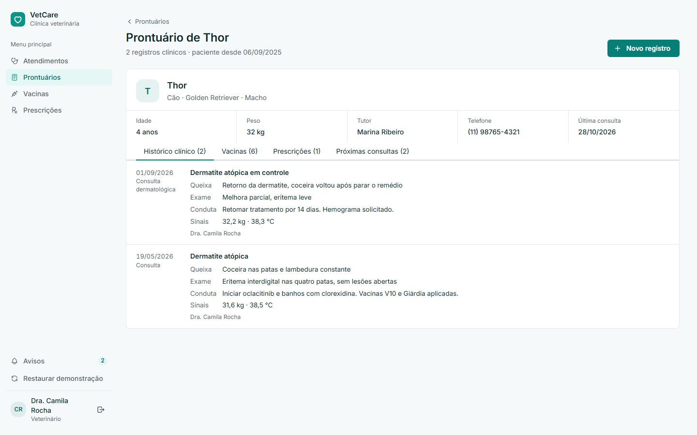
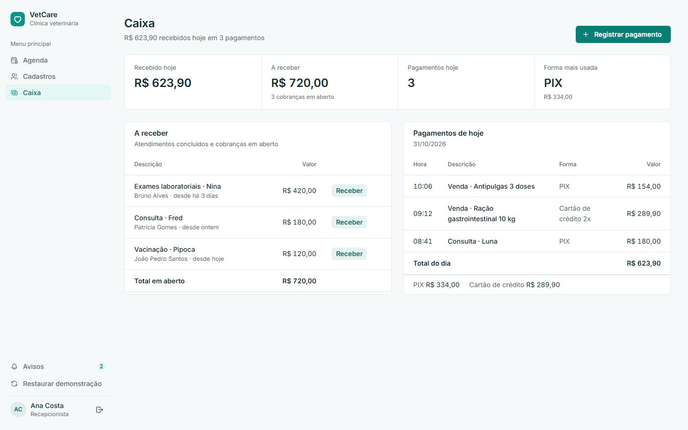
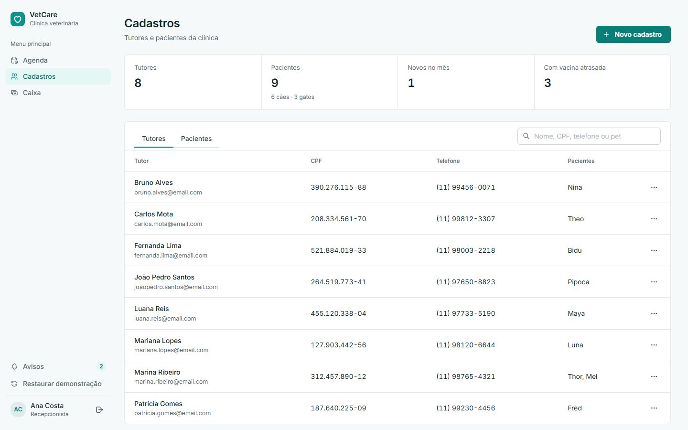
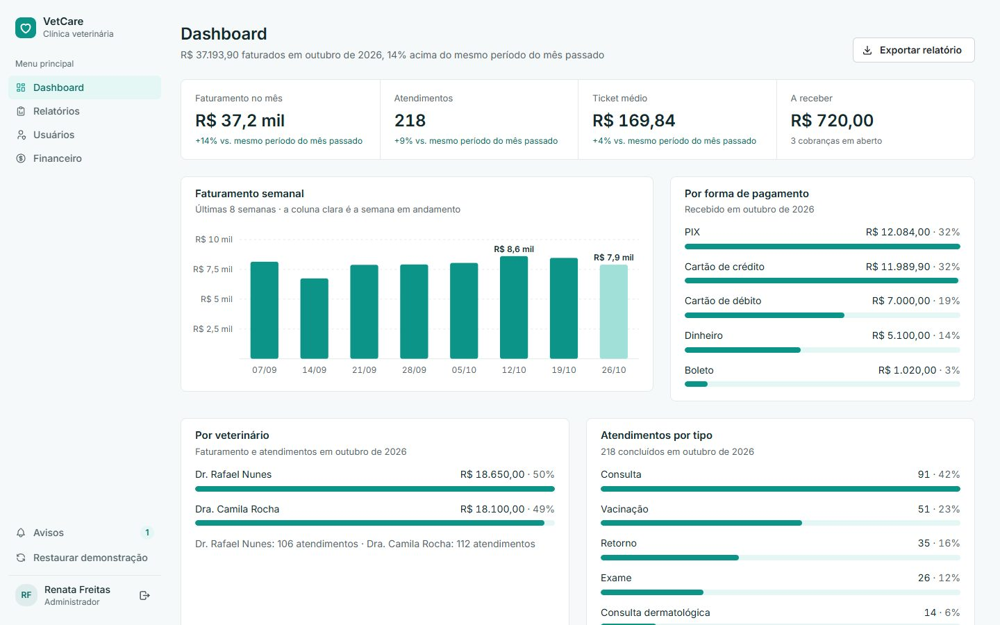
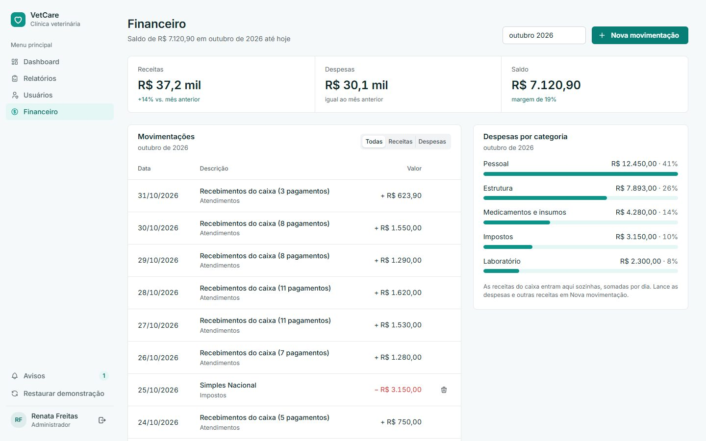
O tutor acompanha tudo do próprio celular: pede consulta, vê a carteira de vacinas e baixa a receita.
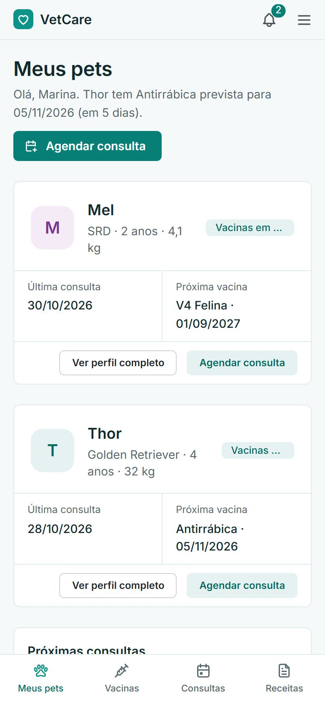
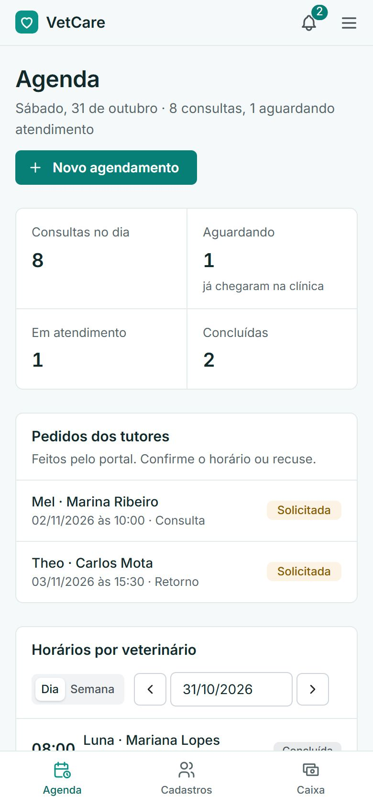
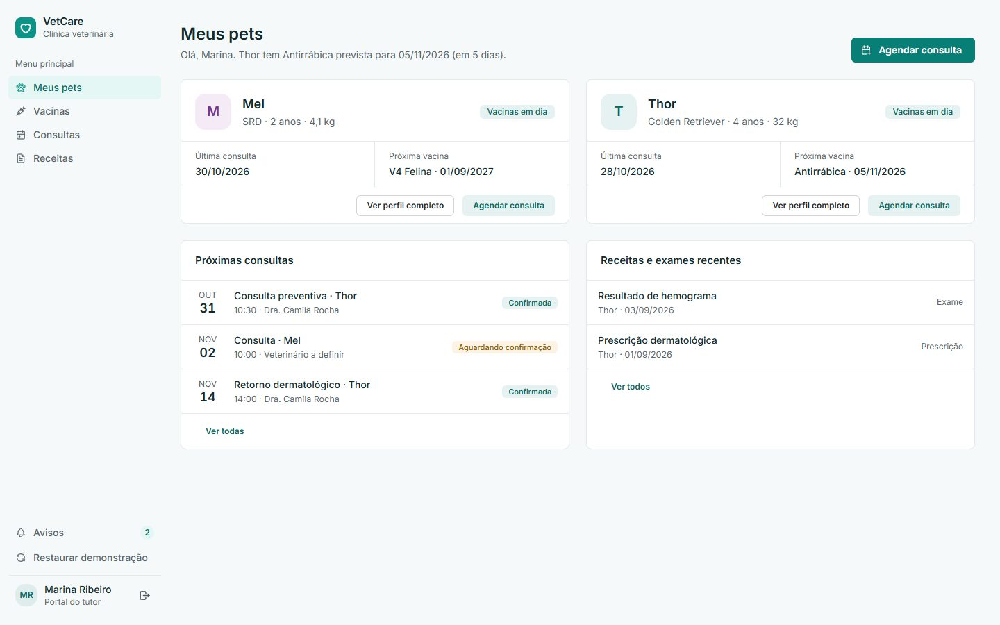
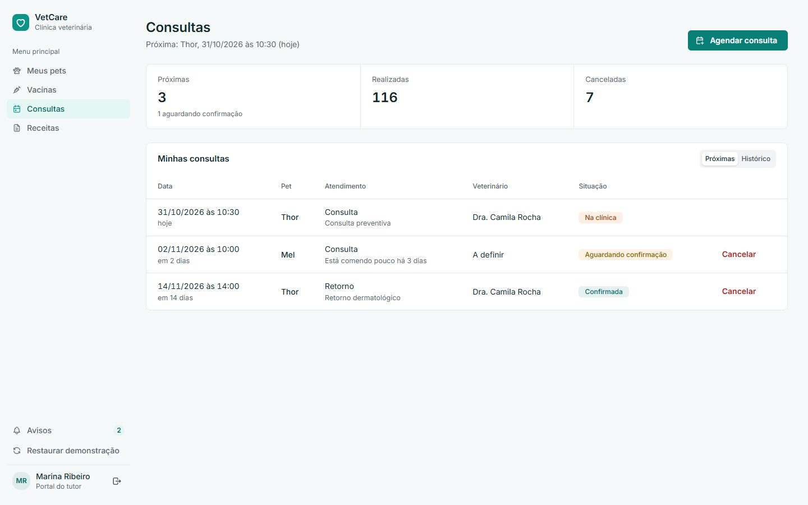
As telas nunca chamam a rede direto: tudo passa por src/api/index.js. Hoje essas funções respondem com dados de demonstração; para ligar, troca-se o corpo de cada uma pela chamada HTTP, mantendo o mesmo formato de resposta.
| Etapa do fluxo | Função no front | Rota sugerida |
|---|---|---|
| Login | auth.login | POST /auth/login → token + usuário |
| Pedido do tutor | appointments.request | POST /appointments/requests |
| Horários livres | appointments.slots | GET /appointments/slots |
| Confirmar pedido | appointments.confirmRequest | POST /appointments/:id/confirm |
| Chegada / cancelar | appointments.setStatus | PATCH /appointments/:id/status |
| Iniciar atendimento | care.start | POST /appointments/:id/start |
| Concluir atendimento | care.finish | POST /appointments/:id/finish |
| Receber no caixa | charges.pay | POST /charges/:id/pay |
| Dashboard | dashboard.overview | GET /dashboard/overview |
| Financeiro | finance.month | GET /finance?month= |
A lista completa (cerca de 45 funções, uma rota cada) está em src/api/README.md no repositório.
VITE_API_URL no arquivo .env.src/api/index.js pela chamada real, começando pelo login.db.js e seed.js).Com Node instalado, dentro da pasta do projeto:
npm installnpm run dev → localhost:5181
Na tela de login, escolha o perfil de demonstração. Os dados de exemplo são fictícios e voltam ao início todo dia ou pelo botão "Restaurar demonstração".
Stack: React 18, Vite 5, Mantine 7, Tabler Icons, dayjs, React Router 6.